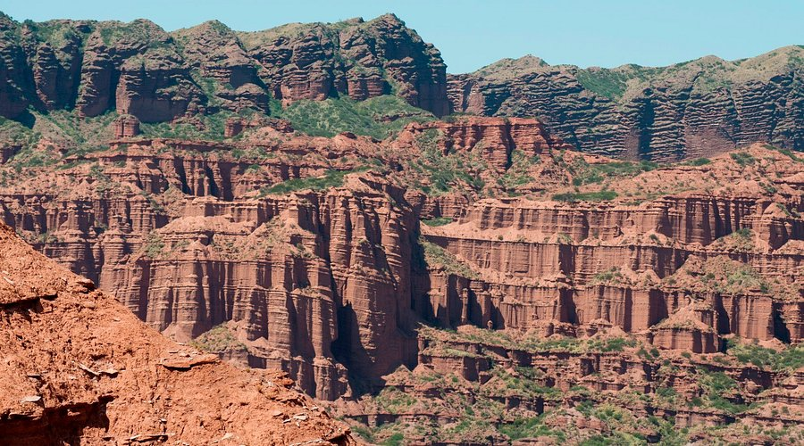

Sierra de las Quijadas
Parque con imponentes formaciones rocosas, senderos y fauna autóctona.
Parque con imponentes formaciones rocosas, senderos y fauna autóctona.
Villa serrana con microclima ideal, paisajes verdes y miradores con vistas al valle.

Embalse rodeado de montañas, perfecto para pescar, navegar y disfrutar la naturaleza.
Ciudad moderna con historia colonial, plazas, arte y cultura en el corazón puntano.
Lago entre montañas, circuito automovilístico y hoteles con vistas espectaculares.
Antiguo pueblo minero entre cerros, historia, minas y encanto de montaña pura.